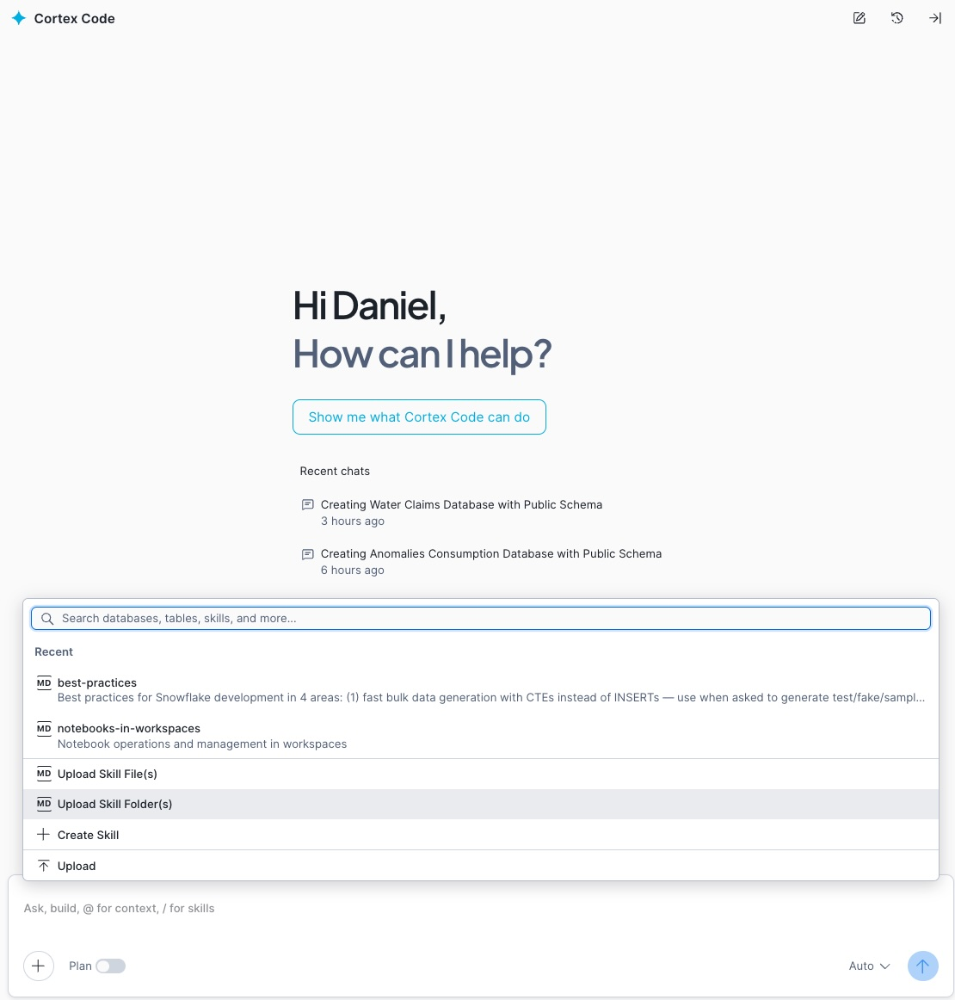

1 What is Cortex Code?
Cortex Code is the AI-powered programming assistant built into Snowsight, Snowflake's web interface. It lets you generate SQL, Python and Streamlit code directly from natural language, accelerating the development of analytical solutions.
Core capabilities
- SQL code generation — CREATE TABLE, INSERT, views, procedures, functions
- Cortex AI/ML — ML.CLASSIFICATION, ML.FORECAST, CORTEX.COMPLETE, CORTEX.SENTIMENT, Cortex Search
- Feature Store — Entity, FeatureView, get_features()
- Model Registry — log_model(), get_model(), versioning
- Streamlit — Interactive dashboard generation
- Tasks & Pipelines — Automation and orchestration
Important: Cortex Code generates code that runs in your Snowflake account. Everything stays within your environment — no external dependencies, no data sent outside.
2 Prerequisites
Before getting started, make sure you have the following configured:
Snowflake account
Important: Contact your Snowflake representative to request the creation of the accounts needed for your team. This way we ensure all Cortex Code and Cortex AI features are supported: ML.CLASSIFICATION, ML.FORECAST, CORTEX.COMPLETE, CORTEX.SENTIMENT, Cortex Search, and Feature Store.
Accessing Cortex Code in Snowsight
Once inside your account, the Cortex Code assistant panel appears on the right side of the screen. It is your AI programming companion for running all the prompts in this guide:

Ready: If you see the Cortex Code panel with the message «How can I help?» on the right, you can start copying and pasting the prompts for any use case.
Account and permissions
- Snowflake account with Snowsight access
- Role with CREATE DATABASE, CREATE SCHEMA, CREATE TABLE permissions
- Active warehouse (recommended: size S for development, M for production)
- Cortex Code enabled in the account (available in all editions)
For advanced features
- Cortex AI/ML: Requires a region that supports Cortex Functions (AWS us-west-2, us-east-1, eu-west-1, etc.)
- Feature Store:
snowflake-ml-pythonpackage available - Model Registry: Permissions to create models in the schema
- Streamlit: CREATE STREAMLIT permission in the schema
Note on regions: Some Cortex AI features (such as ML.CLASSIFICATION or CORTEX.COMPLETE) require specific regions. Check the availability documentation to verify your region.
3 Opening Cortex Code in Snowsight
Cortex Code is integrated across several surfaces in Snowsight. Here are the ways to access it:
Option A — From Workspaces
- Go to Snowsight → Projects → Workspaces
- Create or open an existing workspace
- Click the Cortex icon (✨) in the right sidebar, or use the shortcut Cmd+Shift+Space (Mac) / Ctrl+Shift+Space (Windows)
- The Cortex Code panel will open to the right of the editor
Tip: The Cortex Code panel maintains the context of your workspace. If you have tables referenced in the editor, Cortex Code will use them as context to generate more precise code.
4 Adding the Best-Practices Skill to Cortex Code
To improve performance and reduce costs of generated code, you can add the best-practices skill to Cortex Code. Once loaded, it will be available before each prompt and guide the assistant to generate more efficient and Snowflake-optimized code.
4.1 — Download the skill
Download the compressed file with the best-practices skill and save it on your computer:
4.2 — Unzip locally
Unzip the downloaded file on your computer. You will get a folder called best-practices with the skill files ready to upload.
Tip: Unzip it somewhere easy to find (for example, the Desktop or your Downloads folder), as in the next step you will need to select it from Snowsight.
4.3 — Upload the skill to Cortex Code in Snowsight
In Snowsight, within the Cortex Code panel, click the + button, select the «Upload Skill Folder(s)» option and choose the best-practices folder you just unzipped:

Note: The + button is located at the top of the Cortex Code panel, next to the context selector. Clicking it will show a menu — select «Upload Skill Folder(s)» and navigate to where you unzipped the skill.
4.4 — Use the skill before each prompt
Once uploaded, the skill will be available in your Cortex Code session. Type the command /best-practices before each prompt to activate it and get more efficient code:

Ready: With the skill active, Cortex Code will automatically apply Snowflake best practices to all generated code: efficient warehouse usage, clustering keys, query optimization and credit cost reduction.
5 Working with the 14 Prompts
The Industrial AI Operations Copilot is built with 14 sequential prompts. Each prompt generates Snowflake objects (tables, views, AI functions, search services, or Streamlit pages). The recommended workflow is:
Prompt Guide
Cortex Code
each prompt
run
app
Structure of the 14 prompts
Open the Prompt Guide to see each prompt with its copy button and expected result. The structure is:
- Prompt 1 — Database & synthetic data: Creates INDUSTRIAL_AI_OPERATIONS_COPILOT database, RAW_DATA and ANALYTICS schemas, warehouse, 16 tables with 2.8M+ records, and 8 analytical views.
- Prompt 2 — Cortex Search: Configures INDUSTRIAL_OPS_SEARCH semantic search service over 35 documents (manuals + historical tickets).
- Prompt 3 — AI functions: Creates 6 UDFs using CORTEX.COMPLETE (mistral-large2), AI_CLASSIFY, and AI_EXTRACT.
- Prompt 4 — Streamlit scaffold: Creates the 8-page Streamlit application structure with navigation and Snowflake theme.
- Prompts 5–12 — Page implementations: Each prompt implements one application page (Operations Center, Production Plant, Alerts, Tickets, Production Planner, Predictive Maintenance, Fleet Copilot, Ask AI).
- Prompt 13 — Visual design: Applies Snowflake theme, high-contrast CSS, AI reasoning panels, and formatted card layouts.
- Prompt 14 — Documentation: Generates the project summary HTML with architecture diagram and conclusions.
Sequential order: Prompts are designed to run in order. Each step depends on objects created in previous steps. Do not skip steps.
6 Running the Industrial Copilot Step by Step
Let's walk through the complete process with the Industrial AI Operations Copilot:
6.1 — Open the Prompt Guide
- Open the Industrial AI Operations Copilot — Prompt Guide
- Read Section 1 (Business Context) to understand the use case: 3 chemical plants, 446 equipment, sensor monitoring, predictive maintenance, and AI-powered alert triage
- Review Section 3 (Architecture) to see what will be generated: 16 tables, 8 views, 6 AI functions, 1 Cortex Search service, and an 8-page Streamlit app
6.2 — Run the Prompts
- In Snowsight, open a workspace and activate Cortex Code
- In the Prompt Guide, go to Section 2 (The Prompts)
- For each of the 14 prompts:
- Click «Copy» on the prompt block
- Paste it into the Cortex Code panel (remember to type
/best-practicesfirst) - Cortex Code will generate the corresponding SQL/Python code
- Review it before running (see section 7)
- Click «Run» or «Apply»
- Verify it ran successfully
- Move on to the next prompt
Expected result: After running all 14 prompts you will have: the INDUSTRIAL_AI_OPERATIONS_COPILOT database with 16 tables (2.8M+ sensor readings, 446 equipment, 966 alerts, 150 tickets), 8 analytical views, 6 Cortex AI functions, 1 Cortex Search service (35 documents), and a fully functional 8-page Streamlit application with Operations Center, Production Plant, Alerts & Smart Actions, Ticket Assistant, Production Planner, Predictive Maintenance, Fleet Copilot, and Ask AI.
7 Reviewing and Validating Generated Code
Cortex Code generates high-quality code, but you should always review it before running. Key points:
Review checklist
- Object names: Verify the database, schema and warehouse match your environment
- Warehouse size: Adjust the size to your workload (S for development, M-L for production)
- Synthetic data volume: Prompts suggest representative volumes; adjust as needed
- LLM models: Verify the referenced model (e.g.,
llama3.1-70b,mistral-large2) is available in your region - ML functions: Confirm ML.CLASSIFICATION, ML.FORECAST are available
- Permissions: Your role must have the necessary grants on the objects
Adapting to real data
The 14 prompts generate synthetic data for demonstration. To go to production with real industrial data:
- Replace synthetic
INSERTstatements with connections to your real SCADA, MES, CMMS, or IoT sources (Snowpipe, connectors, or COPY INTO) - Adjust column names in the 16 tables to match your data model (equipment IDs, sensor types, alert categories)
- Modify business thresholds in the risk scoring SQL (vibration, temperature, pressure anomaly percentages)
- Update the AI function prompts to match your industry terminology and operating procedures
- Keep the Streamlit application structure, Cortex Search service, and analytical views as-is
Synthetic data: Generated data is fictional and representative. Do not use in real business reports. It serves to validate the end-to-end pipeline before connecting real data.
8 Deploying Streamlit Dashboards
Almost all use cases include a prompt to generate a Streamlit dashboard. Here is how to deploy it:
8.1 — The Streamlit app is generated in Prompts 4–13
- Prompt 4 creates the scaffold with
st.navigation/st.Pageand 8 pages - Prompts 5–12 implement each page (Operations Center through Ask AI)
- Prompt 13 applies Snowflake theme, high-contrast CSS, and AI reasoning panels
- The app uses
st.connection("snowflake", ttl=os.getenv("SNOWFLAKE_CONNECTION_TTL"))for all data access
8.2 — Verify and share
- Click Run in the Snowsight workspace to deploy the app
- Test all 8 pages: check KPIs load, charts render, AI buttons generate responses
- If there are errors, verify the tables and views exist (created in Prompts 1–3)
- Verify the AI functions work by testing one recommendation button
- Share the app with other users using «Share»
9 Checking Usage Costs
After running one or more use cases, use this prompt in Cortex Code to get a consolidated summary of all credits and tokens consumed today: warehouses, Cortex AI functions, ML models and Cortex Code in Snowsight.
Prompt — Daily cost summary
Copy and paste this prompt directly into Cortex Code (remember to activate /best-practices first):
Note: ACCOUNT_USAGE data has a latency of up to 45 minutes. If you just ran a use case and no data appears, wait a few minutes and run the query again.
Alternative: If CORTEX_FUNCTIONS_USAGE_HISTORY is not available in your account, Cortex Code will automatically replace that section with METERING_DAILY_HISTORY using service_type = 'AI_SERVICES'.
10 Tips and Best Practices
Development
- Always use
/best-practicesbefore each prompt — Activates the skill so Cortex Code generates Snowflake-optimized code with properst.connection(),@st.cache_data, and warehouse-efficient patterns - Run prompt by prompt — Don't try to run all 14 prompts at once; each step depends on objects created in previous steps
- Name objects consistently — The prompts use INDUSTRIAL_AI_OPERATIONS_COPILOT as the database name throughout; keep it consistent
- Save the worksheet — Each use case generates quite a bit of code; save frequently
Cortex Code
- Be specific in your prompts — The 14 prompts are already detailed, but you can add context from your business
- Iterate on the code — If the generated code is not exactly what you need, ask Cortex Code to adjust it
- Use worksheet context — If you already have tables in the editor, Cortex Code will reference them automatically
- Combine prompts if needed — For advanced users, you can combine 2-3 steps in a single longer prompt
Production
- Replace synthetic data with real data — The pipeline works the same, you only change the data source
- Configure Resource Monitors — Control warehouse credit consumption
- Review permissions — Use specific roles for each project (data_scientist, analyst, etc.)
- Monitor Tasks — Review execution history in Activity → Task History
- Version your models — Use cases with Model Registry already include versioning; use it for A/B testing
11 Frequently Asked Questions
best-practices.zip), unzipping it on your computer and uploading the folder to Cortex Code via the + button in Snowsight. Once uploaded, it will be available with the /best-practices command and you won't need to repeat the process.